ReLEAF Perfusion Bioreactor
Overview
A closed loop for continuous production and physical containment.
The ReLEAF perfusion bioreactor is a closed culture system designed to continuously grow engineered B. subtilis while physically retaining the cells inside the system. Culture circulates through the lumen side of a hollow‑fiber membrane, while smaller soluble products can cross the membrane into a separate collection stream.
Purpose
2.1 From TgPGPR to a Bioreactor
Climate change makes crop stress more frequent and harder to predict, and we want to give crops a genetically modified bioprotectant to help them cope. Our first design was a transgenic plant‑growth‑promoting rhizobacterium (TgPGPR) that would live on the roots and make the protectant there.
We chose a bioreactor instead, for two reasons. The main one is biosafety. Once a transgenic organism is released, its expression, dose and spread can no longer be controlled. The other is survival. Lab strains of B. subtilis lack motility, can’t form biofilm and have metabolic deficiencies, so they would struggle in the field anyway.
We only need the protectant in the field, so we keep the organism in a machine and send out only its product. That turns a release problem into a containment problem.
2.2 Why B. subtilis and Perfusion Hollow Fiber
We chose Bacillus subtilis because the FDA classifies nonpathogenic, nontoxigenic strains as Generally Recognized as Safe (GRAS) under good manufacturing practices. It is easy to engineer, and it secretes recombinant protein into the medium, so the cells never have to be broken open to collect the protectant.
We used two strains. B. subtilis 168 ran the growth tests and the first integrated run, where it barely made detectable enzyme, probably because its own secreted proteases broke the product down. Every later run used B. subtilis WB800, which lacks those proteases (4.2, prototype 1). Both are nonpathogenic lab strains, and the hardware is the same for either.
Secretion suits a hollow fiber. The culture runs through the fiber lumens and medium flows past the outside; the protectant crosses the membrane and the bacteria cannot. The cells stay intact, so the culture can keep producing for days. The longest logged run is 116 hours.
2.3 Against Shelf Production
Peptides degrade in storage and often need a cold chain, so a bottle can lose potency before it is used. Made on site, the protectant is fresh and its dose is known, and nobody pays to chill and ship a product that is mostly water. That matters most to small growers.
Hardware Highlights
3.1 Hollow‑Fiber Perfusion
Fresh medium flows in and waste flows out while the culture keeps running, so the cell density stays high and the protectant comes off as a steady stream.
3.2 Containment and Product Release
The membrane’s pores let the protectant through and hold the cells back, so the part that contains the organism is also the part that delivers the product. Everything that reaches the plant has crossed it.
3.3 Integrated Monitoring
An in‑line photometer reads OD600 through a flow cell without drawing a sample, a probe reads pH in the vessel, and the transmembrane pressure is tracked so fouling shows up as a trend before it becomes a failure. Everything reports to a web dashboard on the local network, so we can watch a run without touching the rig.
3.4 The System, Stage by Stage
As designed
-
Culture in the reservoir
A stirred 1 L medium reservoir. In the design, a green light signal from the AIoT stress predictor switches expression on. A magnetic stir bar turns at 200 rpm, added in bacteria‑growth DBTL 2 (photometer page) after we found the cells settling. A pH probe in the cap reads the culture where it grows.
-
Read without opening the loop
The peristaltic pump draws culture from the reservoir, past the Luer sampling valve, and drives it at 263 mL/min (the operating flow from 4.1) through the in‑line photometer and into the bottom of the membrane column. It squeezes the tubing from outside, so the fluid path stays closed at the pump head.
-
The only crossing
A hollow‑fiber membrane splits the system in two. This wall is the single place the two circuits touch, and the organism is retained on the lumen side.
-
Nothing leaves the culture loop
Culture rises through the lumens and leaves at the top, back to the reservoir through a servo‑driven pinch valve, which clamps the return line to set the pressure across the fibers. A small pump doses KOH from a second bottle into this line to hold the pH. Nothing leaves the culture loop except through the membrane wall.
-
Harvest, on the shell side
A second pump moves shell‑side fluid out of the column. Anything in that stream crossed the fiber wall, whose 0.2 µm pore is smaller than a B. subtilis cell; shell‑side medium plated in bacteria‑growth DBTL 1 (photometer page) produced no colonies (8).
-
Out to delivery
Shell‑side fluid leaves the machine for the delivery stages, a soil or hydroponic line.
-
One closed loop, one open path
The culture circulates and never leaves. What crosses the wall to the field is the protectant plus anything else smaller than the 0.2 µm pore: medium components, vesicles, debris (8). The wall is there to stop whole cells. Containment is physical at the membrane; the Luer sampling valves are the one place where procedure still matters.
Engineering Cycles
The bioreactor is built around a 0.2 µm mPES hollow‑fiber membrane that keeps the cells on the lumen side and lets the protectant cross to the shell side. Its flow and pressure show whether perfusion holds at the set rate and whether the membrane is fouling. 4.1 measures that flow and pressure; 4.2 runs the whole loop together. The bacteria‑growth cycles are in part 2 of the photometer page.
4.1 Hollow Fiber Membrane
This track mapped each pump output (%) to the flow rate Q it gives and the pressure that flow builds across the membrane. With that ΔP–Q relationship the bioreactor can be monitored and controlled from the pump output alone. Two manual rounds showed the result depended on who measured it. The instrumented third round separated the membrane from the plumbing and set an operating point of 263 mL/min at a TMP of 0.30 bar. A magnetic pump, tried for long runs, could not move the medium, so the peristaltic pump stayed.
Prototype 1 of 4
Prototype 1 – Manual PQ
Round 1: three pressure sensors, flow measured by hand
Design
The goal was a ΔP–Q relationship, so that the pressure across the membrane is known from the pump output without measuring flow and pressure by hand each time. Round 1 put a pressure sensor on each of the module’s three ports: feed (medium entering the lumen side), retentate (medium leaving it) and permeate (the shell side, reached through the membrane).
The transmembrane pressure (TMP) is the mean lumen pressure minus the shell pressure: TMP = (Pfeed + Pretentate) / 2 − Ppermeate. To tie pressure to flow, the pump stepped from 10% to 100% output in 10% steps, one minute at each.
Build
The three sensors were BP8G‑AGB ceramic pressure transmitters (Jingfeng), 0–1 MPa gauge, with a three‑wire 0–5 V output (10.1). The loop ran on water, as every calibration run did until the magnetic‑pump test (prototype 4). Q was measured by hand, here and in round 2: at each output the pump ran for one minute, drawing from a container of water into an empty measuring cylinder, and Q is the volume collected.
The pressure transmitterBP8G‑AGB, from its manual
- Ningbo Jingfeng ceramic transmitter; gauge ranges 0–1 to 0–5 MPa (0–1 MPa used here); overload to 2× full scale, bursts above 3×.
- Non‑linearity 0.25%, repeatability 0.1%, hysteresis 0.2%; 1.0% of full scale overall (20 °C, best fit straight line).
- Operates from −20 to +85 °C, compensated 0–50 °C, 0.03%/°C typical; drift under 0.5% of full scale a year.
- Outputs: 4–20 mA two‑wire; three‑wire voltage (0–5, 1–5 or 0.5–4.5 V on 10–30 V DC or 5 V DC; 0–10 V on 12–30 V DC); ratiometric on 4.5–5.5 V. Voltage outputs want a load above 10 kΩ.
- Three‑wire pins: 1 red, supply +; 2 black, ground; 3 yellow, signal.
- SS304 port and housing, 96% alumina ceramic diaphragm, HNBR seal; GX12 three‑pin connector on a 1 m cable; IP65; about 120 g.
Test
Outputs from 10% to 60% were measured three times, 70% to 100% once. The average Q rose from 100.3 mL/min at 10% to 1535 mL/min at 100%. Up to 50%, each 10% step added about 210–225 mL/min, close to a straight line. Above that the steps shrank, to about 55 mL/min from 80% to 90%, so the pump may be near its maximum delivery. Repeated trials agree within 12 mL/min.
| Pump output | Trial 1 (mL/min) | Trial 2 (mL/min) | Trial 3 (mL/min) | Average (mL/min) |
|---|---|---|---|---|
| 10% | 103 | 100 | 98 | 100.3 |
| 20% | 315 | 312 | 315 | 314 |
| 30% | 536 | 540 | 538 | 538 |
| 40% | 760 | 764 | 768 | 764 |
| 50% | 978 | 975 | 984 | 979 |
| 60% | 1131 | 1140 | 1128 | 1133 |
| 70% | 1260 | – | – | 1260 |
| 80% | 1360 | – | – | 1360 |
| 90% | 1415 | – | – | 1415 |
| 100% | 1535 | – | – | 1535 |
The pressure readings of this round were not good enough to use, so only the flow rates above are reported.
Learn
Pump output gives a repeatable Q, which the relationship needs. The pressure side failed. The TMP readings were unsatisfactory, and nothing confirmed Q during the pressure runs. So round 2 measured Q in every pressure run.
Prototype 2 of 4
Prototype 2 – Manual PQ
Round 2: flow timed by hand in every pressure run
Design
Round 1 left Q unconfirmed during the pressure runs, so round 2 took a flow reading with every pressure reading. With no flow instrument yet, several team members measured by hand, all following the same protocol.
Build
Same loop and sensors as round 1. At each output the pump ran for one minute while the water was collected in a 1000 mL measuring cylinder and its volume read. The outputs were 10% to 22% in 2% steps, seven in all, and about five team members took the measurements.
Test
We compared two rounds of manual readings, each taken by different people. In the first, the results changed from person to person despite the same protocol. Each of its three series is roughly linear (R2 0.91–0.95), but they are three different lines, with slopes from 0.0002 to 0.0017 bar per mL/min.
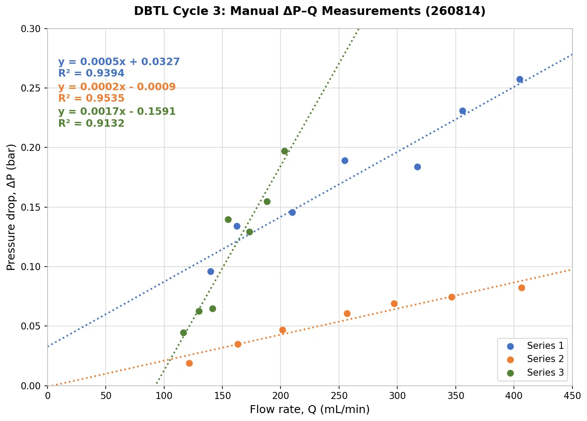
At the same pump output, 22%, the three sets read:
- 405 mL/min at 0.257 bar (3.73 psi)
- 407 mL/min at 0.082 bar (1.19 psi)
- 203 mL/min at 0.197 bar (2.86 psi)
Same conditions, yet the pressure differed more than threefold and the flow rate by half.
The readings, repeated three times at the same outputs:
The readings57 readings, 3 repeats
| Repeat | Pump output | Q (mL/min) | Pressure (psi) | Pressure (bar) |
|---|---|---|---|---|
| 1 | 10% | 110 | 0.537 | 0.03702 |
| 1 | 10% | 120 | 0.7915 | 0.05457 |
| 1 | 10% | 120 | 0.604 | 0.04164 |
| 1 | 12% | 150 | 0.8135 | 0.05608 |
| 1 | 12% | 155 | 0.6915 | 0.04767 |
| 1 | 12% | 160 | 1.2115 | 0.08352 |
| 1 | 14% | 205 | 0.6635 | 0.04574 |
| 1 | 14% | 200 | 0.624 | 0.04302 |
| 1 | 14% | 205 | 1.5225 | 0.10497 |
| 1 | 16% | 250 | 2.0139 | 0.13885 |
| 1 | 16% | 239 | 2.0808 | 0.14346 |
| 1 | 16% | 240 | 1.9742 | 0.13611 |
| 1 | 18% | 280 | 2.155 | 0.14858 |
| 1 | 18% | 284 | 2.3113 | 0.15935 |
| 1 | 18% | 283 | 2.2592 | 0.15576 |
| 1 | 20% | 337 | 3.0403 | 0.20962 |
| 1 | 20% | 330 | 2.8888 | 0.19917 |
| 1 | 20% | 335 | 2.6403 | 0.18204 |
| 1 | 22% | 394 | 3.4089 | 0.23503 |
| 1 | 22% | 395 | 3.518 | 0.24255 |
| 1 | 22% | 387 | 3.219 | 0.22194 |
| 2 | 10% | 115 | 0.2003 | 0.01381 |
| 2 | 10% | 120 | 0.2825 | 0.01947 |
| 2 | 10% | 130 | 0.3339 | 0.02302 |
| 2 | 12% | 170 | 0.5282 | 0.03641 |
| 2 | 12% | 160 | 0.4203 | 0.02897 |
| 2 | 12% | 160 | 0.5633 | 0.03883 |
| 2 | 14% | 200 | 0.5225 | 0.03602 |
| 2 | 14% | 200 | 0.7708 | 0.05314 |
| 2 | 14% | 205 | 0.7393 | 0.05097 |
| 2 | 16% | 253 | 0.8101 | 0.05585 |
| 2 | 16% | 264 | 0.9423 | 0.06496 |
| 2 | 16% | 254 | 0.8818 | 0.06079 |
| 2 | 18% | 307 | 1.1805 | 0.08139 |
| 2 | 18% | 290 | 0.8807 | 0.06072 |
| 2 | 18% | 295 | 0.9339 | 0.06439 |
| 2 | 20% | 345 | 0.9324 | 0.06428 |
| 2 | 20% | 350 | 1.1345 | 0.07822 |
| 2 | 20% | 345 | 1.1684 | 0.08055 |
| 2 | 22% | 395 | 1.26 | 0.08687 |
| 2 | 22% | 420 | 1.1794 | 0.08131 |
| 2 | 22% | 405 | 1.1339 | 0.07817 |
| 3 | 10% | 140 | 1.390 | 0.09583 |
| 3 | 12% | 160 | 1.817 | 0.12527 |
| 3 | 12% | 165 | 2.067 | 0.14251 |
| 3 | 14% | 210 | 1.553 | 0.10707 |
| 3 | 14% | 210 | 2.666 | 0.18381 |
| 3 | 16% | 255 | 2.214 | 0.15264 |
| 3 | 16% | 255 | 3.3365 | 0.23004 |
| 3 | 16% | 255 | 2.673 | 0.18429 |
| 3 | 18% | 327 | 2.781 | 0.19174 |
| 3 | 18% | 305 | 2.436 | 0.16795 |
| 3 | 18% | 320 | 3.0136 | 0.20778 |
| 3 | 18% | 320 | 2.427 | 0.16733 |
| 3 | 20% | 355 | 3.239 | 0.22332 |
| 3 | 20% | 357 | 3.455 | 0.23821 |
| 3 | 22% | 405 | 3.732 | 0.25731 |
Learn
Only the person measuring changed, so the spread came from measuring technique. Timing a collected volume depends on each operator, and every manual step adds its own error. A ΔP–Q relationship we could trust needed both Q and pressure read by instruments, the same way every time.
Prototype 3 of 4
Prototype 3 – Automatic PQ
Every reading by instrument; the plumbing subtracted
Design
Round 3 dropped manual measurement. Pressure came from the transducers and Q from an in‑line flowmeter. That removes reading error, the error of guessing Q from the pump setting, and the slips of manual testing.
Part of the pressure drop comes from the plumbing (valves, fittings and the flow cuvette), so we measured the loop twice at the same pump outputs, without the module and with it, changing nothing else. The difference is the module’s own hydraulic contribution.
We fitted the pressure drop with a through‑origin quadratic model:
The linear term is laminar friction along the fibers and tubing; the quadratic term is minor losses at the valves, fittings and flow cuvette. The fit passes through the origin because there is no pressure drop at zero flow.
Build
Pressure transducers. Their output, up to 5 V, is too high for the microcontroller’s analog input, so a two‑resistor divider brings it to 0–3.3 V (the BP8G‑AGB transmitter, round 1).
Flowmeter. In a Hall‑effect flowmeter, a magnet on a rotor spins as water flows through, a sensor beside it picks up each pass, and the pulse frequency gives Q.
Two configurations. In the Background configuration a plain silicone tubing jumper replaced the membrane module, with every valve, fitting and the flow cuvette in place. In the HFM configuration the module was fitted and nothing else changed.
Test
Both configurations ran on 16 August 2026 at pump outputs from 10% to 24% in 2% steps, one minute each. Both data sets fit the model with R2 0.995, and the residuals show no systematic trend.
The readings and the fits8 pump outputs, 2 configurations
| Pump output | Background Q (mL/min) | Background ΔP (bar) | HFM Q (mL/min) | HFM ΔP (bar) |
|---|---|---|---|---|
| 10% | 119.878 | 0.02367 | 113.368 | 0.06397 |
| 12% | 170.724 | 0.05408 | 163.282 | 0.10300 |
| 14% | 216.416 | 0.07971 | 215.850 | 0.14279 |
| 16% | 274.849 | 0.09996 | 263.323 | 0.18566 |
| 18% | 317.333 | 0.14297 | 312.731 | 0.27363 |
| 20% | 349.582 | 0.16585 | 355.193 | 0.30248 |
| 22% | 395.225 | 0.19910 | 401.328 | 0.38318 |
| 24% | 440.428 | 0.24271 | 450.065 | 0.45271 |
| Configuration | a (bar·min/mL) | b (bar·min2/mL2) | R2 | Residual SD (bar) |
|---|---|---|---|---|
| Background | (1.383 ± 0.294) × 10−4 | (9.388 ± 0.815) × 10−7 | 0.9950 | 0.0057 |
| HFM | (3.810 ± 0.495) × 10−4 | (1.399 ± 0.135) × 10−6 | 0.9954 | 0.0101 |
| Net (difference) | (2.427 ± 0.576) × 10−4 | (4.604 ± 1.575) × 10−7 | – | – |
The two configurations did not land on exactly the same flow rates, so they could not be subtracted point by point. Instead, the Background fit predicted the plumbing’s pressure drop at each HFM flow rate, and that was subtracted. The plumbing is 46% of the total at 120 mL/min and 55% at 450 mL/min. Without the subtraction, the membrane’s own resistance would have been overstated by about a factor of two.
We then compared the net pressure drop with the Hagen–Poiseuille prediction for laminar flow through the fibers. From 113 to 263 mL/min it is 0.90–0.96 times the prediction; above 300 mL/min, 1.07–1.26 times. We put the excess down to minor losses where the flow squeezes from one wide channel into eleven narrow fibers, and to entrance effects before the velocity profile is fully developed.
Two checks on the geometry agree. The net pressure drop gives an effective count of about 11 open fibers, the module’s nominal count, so no fiber is blocked. And the shear rate calculated from Q agrees within 2.8% with the one back‑calculated from the wall shear stress.
The membrane against theory, point by pointthe plumbing’s share; net ΔP vs. theory
| Q | HFM total ΔP (bar) | Background ΔP (bar) | Background share |
|---|---|---|---|
| 120 mL/min | 0.066 | 0.030 | 46% |
| 200 mL/min | 0.132 | 0.065 | 49% |
| 275 mL/min | 0.211 | 0.109 | 52% |
| 350 mL/min | 0.305 | 0.163 | 54% |
| 450 mL/min | 0.455 | 0.252 | 55% |
| Q | Net ΔP (bar) | Theoretical ΔP (bar) | Ratio |
|---|---|---|---|
| 113.4 mL/min | 0.0362 | 0.0401 | 0.90 |
| 163.3 mL/min | 0.0554 | 0.0578 | 0.96 |
| 215.9 mL/min | 0.0692 | 0.0764 | 0.91 |
| 263.3 mL/min | 0.0842 | 0.0931 | 0.90 |
| 312.7 mL/min | 0.1386 | 0.1106 | 1.25 |
| 355.2 mL/min | 0.1349 | 0.1256 | 1.07 |
| 401.3 mL/min | 0.1765 | 0.1420 | 1.24 |
| 450.1 mL/min | 0.2003 | 0.1592 | 1.26 |
The prediction and the shear rates use the fibers’ inner diameter of 1 mm and the prediction their length of 0.60 m, for 11 fibers.
Learn
Round 3 gave the ΔP–Q relationship, ΔP = aQ + bQ2: laminar friction plus minor losses. Two lessons carry forward. The plumbing must be subtracted before the membrane is judged, or its resistance reads about double. And in the operating range the membrane behaves as theory predicts, with all eleven fibers open.
These set the operating window. We recommend 263 mL/min, a shear rate of about 4060 s−1, at a TMP of 0.30 bar. That is mid‑range in the manufacturer’s shear‑rate window of 2000–6000 s−1, keeps the TMP low enough to avoid irreversible compaction of the membrane, and gives an axial TMP non‑uniformity of 28%, still acceptable before filtration turns uneven along the fiber. At 313 mL/min the non‑uniformity reaches 46% (not recommended); at 450 mL/min, 67% (prohibited).
| Q | Net ΔP (bar) | γ (s−1) | Non‑uniformity at | Assessment | |
|---|---|---|---|---|---|
| TMP 0.2 bar | TMP 0.3 bar | ||||
| 140 mL/min | 0.045 | 2161 | 23% | 15% | Usable (conservative) |
| 216 mL/min | 0.069 | 3331 | 35% | 23% | Usable |
| 263 mL/min | 0.084 | 4064 | 42% | 28% | Recommended |
| 313 mL/min | 0.139 | 4826 | 69% | 46% | Not recommended |
| 450 mL/min | 0.200 | 6946 | 100% | 67% | Prohibited |
Prototype 4 of 4
Prototype 4 – Magnetic Pump Test
A wear‑free pump for long runs
Design
Our runs last days, and the peristaltic pump wears mechanically, so its limited life was a liability. A magnetic pump has no such wear and should last much longer in continuous use, so we tested one as a replacement.
Build
The magnetic pump replaced the peristaltic pump in the loop. It is weaker and cannot lift liquid out of the serum bottle, so we planned a clear PC‑water‑cooling reservoir, with ports at the top and bottom to gravity‑feed it. We dropped that plan on 16 August, when the pump proved too weak for the bioreactor (notebook, week 24).
Test
The calibration runs used water; this test used the culture medium, LB. The magnetic pump could not build enough pressure to push the medium through the system and never held a working flow, so we have no data set from it.
Learn
The peristaltic pump stays. It wears out sooner, but it reliably moves the culture medium. It is the pump in the integrated bioreactor (4.2).
4.2 Integrated Bioreactor
Here the membrane track and the long‑term run meet. Prototype 1 is the first integrated run, 116 hours with B. subtilis 168. Prototype 2 (WB800) adds the pinch valve, the pH probe and one mainboard, and finds ACC deaminase on the shell side at the lumen’s level. Prototype 3 holds the pH with KOH and sterilizes the loop in place. In all three ACC deaminase is under a constitutive promoter, so light control is out of the test and the loop itself is what is examined. What the reviewers changed between runs is in part 6.
Prototype 1 of 3
Prototype 1 – Pump Control
First integrated run, with constitutive ACC deaminase production
Design
We had tested each part alone first. The in‑line photometer read optical density reliably for about 240 hours of a 434 h logged run (photometer page, 5.1), the bacteria made ACC deaminase, and the pressure transducers and flowmeter worked on water (4.1, prototype 3). This cycle put every component into one system for the first time. It asked when B. subtilis reaches its plateau in the loop, whether the system supports ACC deaminase production, and how the sensors work and hold up together under operating conditions.
ACC deaminase is under a constitutive promoter, so the strain expresses continuously and light control is not a variable. To speed growth and shorten the run, it ran at 37 °C with 500 mL of medium.
Build
Structure. The loop has a lumen side and a shell side. On the lumen side the peristaltic pump is the main pump, a magnetic stirrer sits under the reservoir, and the culture passes three pressure transducers, one flowmeter and the in‑line photometer, with a Luer valve for samples. In this run the shell side was a closed loop of its own, also with a Luer sampling valve.

Electrical circuit. Transistors and capacitors were added so that the sensors read properly. The photometer’s circuit is on its own page (photometer page, 9.2).
Gene circuit. B. subtilis 168 carrying pSTK‑EXP1‑Pveg‑Csn:AcdS, an expression vector that makes ACC deaminase constitutively. Erythromycin at 5 µg/mL kept the plasmid in the cells and guarded against contamination.
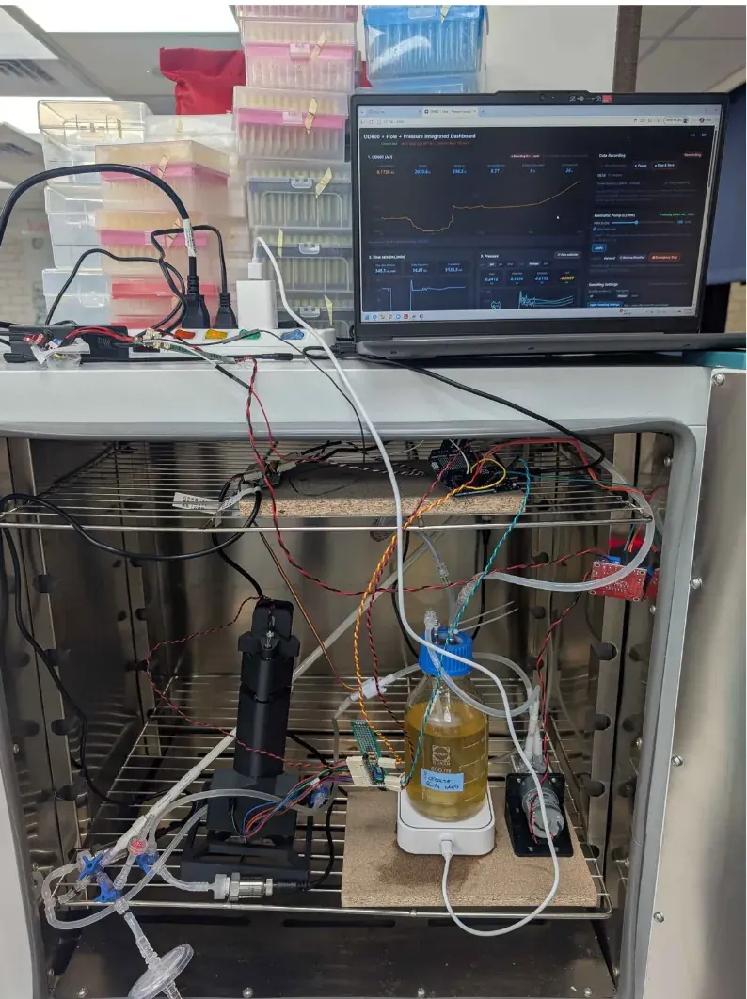
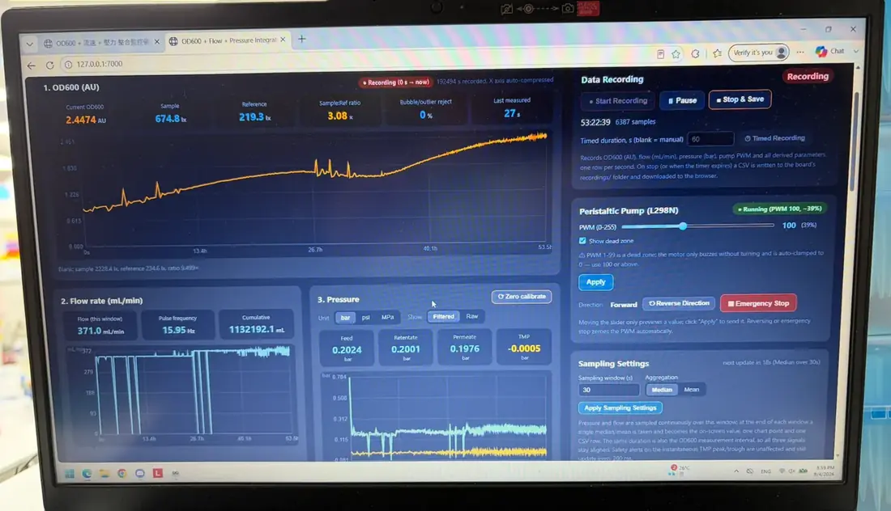
Test
The run started on 1 September 2026 and lasted 116 hours. Partway through, the computer running the microcontroller installed an update and shut down, and since the data lived in the web interface, about 10 hours were lost (grey in the plots). The culture reached its plateau at about 40 hours; at around 47 hours an unexpected second growth began and lasted to the end of the run.

Not all the hardware held up. The pressure reading was unstable throughout, did not respond when the loop was handled, and never returned to its baseline, even with the main pump stopped.
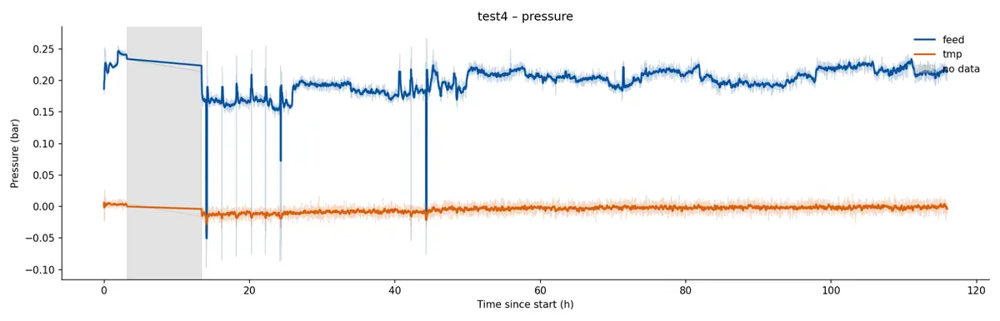
A faint band consistent with ACC deaminase (~42 kDa) appeared in shell‑side medium (the western blot below).
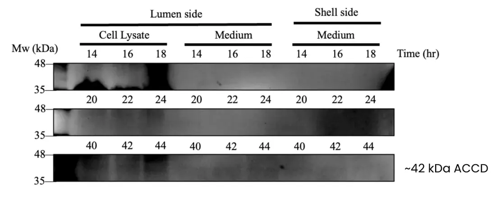
Learn
In the loop the bacteria reach plateau after roughly 40 hours, and that is when they start to make detectable ACC deaminase. A faint ~42 kDa band in shell‑side medium suggests that ACC deaminase reaches the shell side, but expression is weak.
A second growth after the plateau is not what a batch curve does. Our working explanation is that the erythromycin degraded, the cells began to lose the plasmid, and with less metabolic burden they grew again. Plasmid stability was what Prof. Chang asked about in September (6.1). Strain 168 also barely made detectable ACC deaminase, probably because its secreted proteases degrade the product, so the next prototype uses B. subtilis WB800, which lacks them. The unstable pressure readings still need explaining; the electronics review that followed is in 6.2.
Prototype 2 of 3
Prototype 2 – Pinch Valve & pH
WB800, a pinch valve, a pH probe and one mainboard
Design
Prototype 2 answers what prototype 1 and the Owl Lab review found. First, the host strain changed from B. subtilis 168 to WB800, which lacks secreted proteases (prototype 1, Learn).
Second, the hardware. The pressure transducers had read unstably, so they now run on 12 V DC instead of 5 V, with their ground on the DC–DC module rather than on the Arduino UNO Q. The old power supply could not deliver the current the motors and pumps need (6.2); the mainboard Owl Lab proposed (6.2) supplies both.
Third, we added a pH probe and a servo‑driven pinch valve. The valve raises the transmembrane pressure to push product from the lumen side to the shell side, the gap Prof. Chang found in June (6.1). Both plug into the mainboard as modules. The medium went from 500 mL to 1 L, still at 37 °C.
Build
Structure. The shell side now drains to a reservoir that collects the product. The lumen side carries three pressure transducers, one flowmeter, the in‑line photometer, the pinch valve and the pH probe.
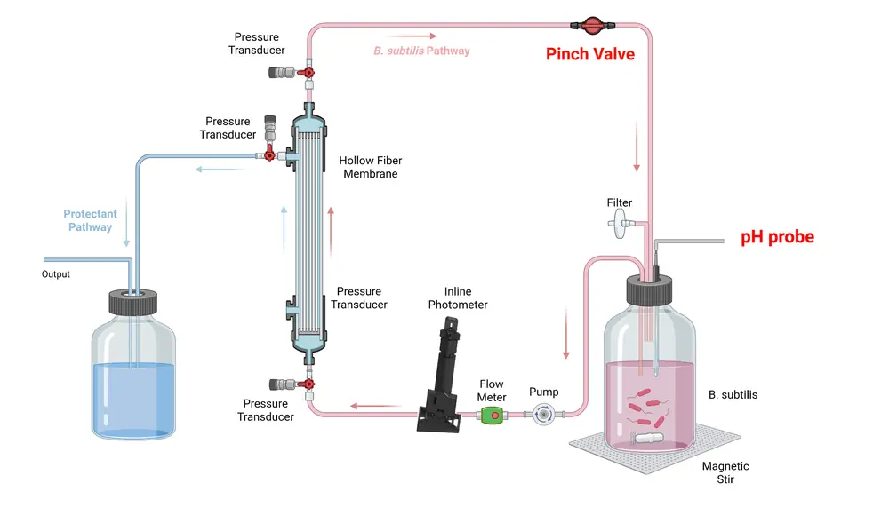
Fixed parts. The pinch valve, a printed body holding an STS3215 12 V servo motor (10.2), clamps the return line about 50 mm (2 in) from the Out‑Lumen connection. The pH probe sits in a slot in the culture bottle’s cap and plugs into the Arduino, and the dosing pump (5 mL/min) draws from a small KOH bottle through a Luer valve into the same return line.
Electrical circuit. The electronics are built around the mainboard, in effect an extension of the UNO Q with room for the design to change. It replaced the two‑board design after Owl Lab’s two reviews (6.2). We dropped prototype 1’s PCBs and wired each sensor straight to the mainboard through an adapter that converts its signal to 3.3 V for the UNO Q (the boards are in 7.1.3).
Gene circuit. B. subtilis WB800 carrying pSTK‑EXP1‑SamyQ‑AcdS‑v2t1, with erythromycin kept at 5 µg/mL. The run started on 8 October 2026, with permeate drawn at 24 mL/min (notebook, week 32).
Test
The pH and OD readings were unstable throughout, so we stopped the run early (37.5 h logged, in four files). ACC deaminase was still measured on both sides with two assays. The DNPH assay measures enzyme activity by detecting the α‑ketobutyrate made when ACC deaminase breaks down ACC. It was adopted on Prof. Chang’s advice to show the protectant is being made (6.1). The ELISA measures how much protein is there. The pressure transducers read stably this time.

The ELISA measured ACC deaminase and our two other protectants, LEA14 and BoPep4, in medium from both sides. Each read about the same on the shell side as in the lumen: ACC deaminase 10.5 against 10.7 µg/mL, LEA14 5.9 against 5.8, and BoPep4 5.4 against 6.2 µg/mL. That is consistent with the protectants crossing the membrane at close to the culture’s concentration.
The ELISA also followed ACC deaminase through the run (the time course below). Both sides peaked near 16 h, at 7.5 µg/mL in the lumen and 7.2 on the shell side, then fell together, staying within about 0.8 µg/mL of each other. That peak sits about 3 µg/mL below the single-point back-calculation quoted above, which is a different set of samples off the same run; both read above the top standard, so neither is better than approximate, and what the two agree on is the only thing this result claims: the two sides read alike.
The ELISA standard curve%B/B0 against concentration; the samples beside the top standard

The DNPH assay detected ACC deaminase activity on both sides (the time course below). On the shell side the α‑ketobutyrate read from its standard curve stayed between 0.16 and 0.29 mM across the four samples; in the lumen it varied between 0.25 and 0.60 mM over the first 24 h. The readings sit at the low end of the standard range (0 to 4.1 mM), and the lumen sample at 40 h reads below zero (−0.13 mM), so these activity values are approximate.
The DNPH standard curveStandards 0–4.1 mM; the samples at the low end

Learn
The bacteria made ACC deaminase in the loop, about 10 µg/mL by ELISA, from one run, and the DNPH assay found it active on both sides, though at the low end of its range. Both assays read the lumen and shell sides the same (ELISA, DNPH), so from the next cycle on only the shell side is sampled. That halves the sampling, keeps the culture loop closed against contamination, and simplifies the setup.
The pH moved during the run, which needs confirming. We also saw few bubbles in the reservoir and suspect the culture was short of oxygen, a possible cause of the abnormal pH, so the next run goes back from 1 L to 500 mL. The pressure transducers read well and need no further change.
Prototype 3 of 3
Prototype 3 – KOH & Clean‑in‑Place
pH held with KOH; the loop cleaned in place
Design
Prototype 2 left the medium too acidic. A pH of 6.5 or lower badly harms B. subtilis growth and cell division and the stability of the protectant enzyme, so we kept the pH probe on the lumen side and added KOH whenever the pH dropped.
We also worked out how to sterilize the assembled loop without an autoclave, by chemical clean‑in‑place (CIP). We pump in 900 mL of distilled water, then 100 mL of 35% hydrogen peroxide; they mix in the lumen reservoir and circulate for 15 minutes, and a starch–iodide test paper checks for peroxide. The solution drains through a tube, which is reattached to close the loop. Then 1 L of distilled water circulates for 30 minutes, with a fresh test paper after each wash, until no peroxide is left. It usually takes five 1 L washes.
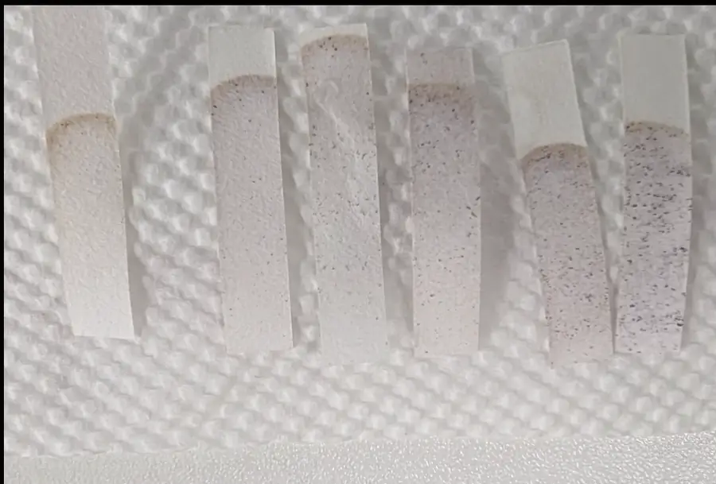
Build
As prototype 2, on the same strain (B. subtilis WB800), with one change. We blamed the acidity on too little oxygen, so the culture volume went from 1 L to 500 mL. The same reservoir has the same surface for oxygen to diffuse through but fewer bacteria to supply, so diffusion alone can give them enough. The notebook adds that permeate was halved to 12 mL/min and the photometer’s acceptance gate was running (notebook, week 33).
Test
The run started on 14 October 2026. Since prototype 2 had shown both sides read the same (its Learn), protectant was drawn from the shell side only, twice, at hours 1.10 and 18.38. At the 38‑hour mark, unnoticed at the time, a Luer valve at the start of the lumen loop broke in half and medium leaked into the incubator. Up to then the pH and OD curves were reliable: clear readings of growth, and of how the pH responded to growth and to KOH. The OD rose from 0.14 to 2.71 by 37 h, a fitted growth rate of 0.286 h−1 (notebook, week 33). That is inside the range forecast before the run. On 1 October a growth rate was registered of 0.2986 h−1, passing if the fitted rate fell between 0.2705 and 0.3300 h−1 (notebook, week 31). After 38 hours the pump’s shaking had knocked the photometer’s light path out of line, so later OD data cannot be used.

Learn
We traced the broken valve to the clean‑in‑place step. We had assumed the 35% hydrogen peroxide would be diluted once it mixed in the reservoir, but it passes through the rest of the loop before it gets there.
The pH probe showed how long the medium takes to rebalance after KOH is added by hand while the bacteria keep growing, and how far the pH shifts in the real bioreactor. Both will help us build automatic pH correction in the next cycle.
Results
5.1 The Lumen and Shell Sides Read the Same
In integrated DBTL 2 (4.2, prototype 2), both assays found ACC deaminase at about the same level on the shell (output) side as in the lumen, where the culture is.
ELISA measured how much enzyme there was, 10.7 µg/mL in the lumen and 10.5 on the shell side (4.2, prototype 2). Followed through the run, both sides peaked near 16 h and then stayed within about 0.8 µg/mL of each other (time course).
DNPH measured whether the enzyme was active. It detected activity on both sides, in the same low range (chart). These readings sit at the low end of the assay’s range, so they are approximate.
The enzyme the cells make reaches the harvest side, while the cells stay behind the membrane (shell‑side medium grew no colonies, 8). So we only need to sample the shell side, which keeps the culture loop closed; we did this from DBTL 3 on (DBTL 2, Learn).
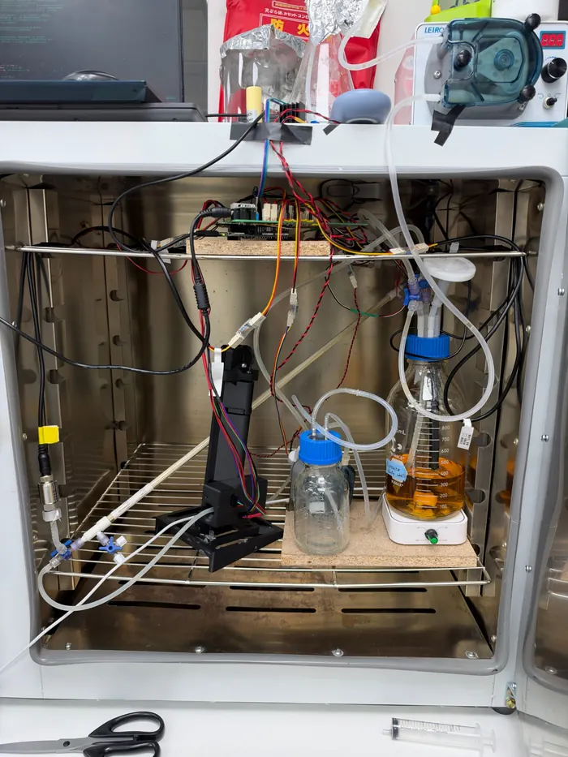
Adjusting to Feedback
Many of the hardware changes between cycles came from two outside reviewers. Prof. Chang Jo‑Shu reviewed the bioreactor’s design on 18 June and 4 September 2026, and Teacher He of Owl Lab reviewed its electronics on 20 and 22 September. Each entry below ends on the build that answered it. Three other experts shaped the design earlier (6.3).
6.1 Prof. Chang Jo‑Shu
Prof. Chang (張嘉修), Chemical Engineering, National Cheng Kung University, is an expert in biomanufacturing. Both meetings were in person.
Prof. Chang 18 June first meetingNo force drove the protectant across the membrane; also its size and how to see fouling
Transmembrane pressureThe largest gap he found was that nothing in the design pushed the protectant from the lumen side, where it is made, to the shell side, where it leaves. A higher flow rate would only recirculate the fluid, not build outward pressure. He recommended a valve after the membrane to build pressure, and narrower tubing to concentrate it.
MembraneOur membrane might be too big, which raises the risk of cells sticking to or clogging the fibers, so he recommended a smaller one. Flow rate and transmembrane pressure must be monitored, since they show fouling (caking). And we should be ready to tell judges why we chose hollow fiber, which we could not yet answer.
ChangedA pinch valve, first designed the next day around a stepper motor and switched to a servo in August (notebook, week 23), holds a transmembrane pressure that pushes product to the shell side (4.2, prototype 2). Three pressure transducers and a flowmeter on the lumen side read fouling; they gave the ΔP–Q relationship and the operating point (4.1, prototypes 1–3) and the readings in prototype 2’s Test. A smaller membrane: the first growth runs used one 30 cm long in a 6.3 cm housing, about 1.3 m²; the integrated runs use a 60 cm module in a 1 cm housing, 200 cm² (10.1), with the same 0.2 µm, 1 mm fibers, fitted in August (notebook, week 24). And the case for hollow fiber (2.2).
Prof. Chang 4 September second meetingRepeat the 22 °C growth, prove production, make the culture a swappable capsule
Growth at 22 °CGrowth of B. subtilis at 22 °C had been inconsistent, in the first test and again with the engineered strain (photometer page, 2). He suggested contamination or a trait of the strain, asked whether we had tested plasmid stability, and advised repeating the experiment. This kind of inconsistency is common but hard to explain from one run, and a repeat that behaves is enough to move on.
Proving productionJudges will ask how we confirm the protectant is released. B. subtilis cannot carry a fluorescent marker for this, and true quantification may cost too much, so we discussed a DNPH assay, along with hydroponic testing and colour indicators a farmer could read by eye.
Farmer useHe saw the updated rig and pressed for usability and AIoT integration. A deployed bioreactor should be modular and easy to handle, ideally with the B. subtilis in a replaceable capsule swapped like a battery, with no hands‑on technical control. He also advised plainer wording for farmers and tying the project to the SDGs.
ChangedWe adopted the DNPH assay (enzyme activity) and ran it with the ELISA (amount of protein) on both sides to confirm the protectant is released (4.2, prototype 2). The 22 °C pattern did not recur in the next run; the plateau and the regrowth after it, put down to plasmid loss, are in 4.2, prototype 1. The capsule is future work, as the planned sealed refill cartridges (9.2.5).
6.2 Teacher He, Owl Lab
Owl Lab is a robotics and electronics teaching lab. With the bioreactor almost built, we asked Teacher He to find its weak points before they caused problems in an experiment.
Teacher He, Owl Lab 20 September first meetingThree faults in servo driver and torque, power supply and board layout, all fixed before prototype 2
Servo controlWe had planned a PCA9685 driver board for the servos that turn the Luer valve and the pinch valve. In his experience it is unreliable. Told to turn 90°, it may stop at 85°, and a valve that misses its position can cause a sudden pressure spike that breaks the tubing and leaks. The servos also lacked the torque to turn the valves. He suggested the STS3215 servo, driven over UART, which is accurate and strong enough.
Power supplyThe plan powered everything through an AMS1117 module, 12 V down to 5 V for most sensors and 3.3 V for the UNO Q. With valve and pump control added, they need more current than it can give.
Control boardThe Arduino UNO Q uses 3.3 V logic, not the usual 5 V, so the pumps, motors and sensors need their voltage stepped. After reading the code, he confirmed the UNO Q has to stay the main board and suggested two boards in series: the UNO Q reads the sensors and serves the interface, and an Arduino Mega 2560 drives the pumps and valves. That keeps high‑current parts off the main controller and voltage‑sensitive sensors, such as the pressure transmitters, away from the pump and valve current.
ChangedWe dropped the PCA9685 for STS3215 servos over UART, which drive the pinch valve added in prototype 2. The mainboard’s own 12 V to 5 V and 3.3 V converter replaced the AMS1117 and gives the pumps and valves the current they need. Two days later the mainboard, built for the same isolation, replaced the two‑board plan (next entry).
Teacher He, Owl Lab 22 September a better planOne mainboard in place of two boards and a tangle of wires
MainboardTwo boards would have meant a bulky package with wires everywhere. Instead, one mainboard carries everything: a converter from 12 V to 5 V and 3.3 V, and every UNO Q pin brought onto it, so the board in effect becomes the UNO Q. A jumper wire sets each pin to any of the three voltages, so any pin can be used for anything and the old tangle becomes swappable modules.
ChangedWe dropped the two‑board design and built the mainboard (4.2, prototype 2). It supplies the current the AMS1117 could not, and it keeps the 3.3 V UNO Q apart from the pumps and valves, the aim of the two‑board plan. With the transducers moved to 12 V and their ground on the DC–DC module, it also ended prototype 1’s unstable pressure readings, a problem we had not asked about. By prototype 2’s Test the transducers read stably. And it made the sensors modular, so the pH probe and the pinch‑valve servo went in without rewiring, with power delivery and electrical isolation reworked (notebook, week 30; 7.1.3).
Two points changed the photometer instead: Prof. Chang’s advice to dilute samples above an OD600 of 1 (photometer page, 5.2), and Owl Lab’s mainboard, which made the photometer a plug‑in module (photometer page, 9.2). Both are in the photometer page’s Adjusting to Feedback.
6.3 Other Reviewers
Prof. Chen Wen‑Liang 10 AprilKeep the bacteria in a vessel, and sell the consumable
AdvisedDrop soil‑moisture sensing. Cheap sensors already dominate that market, and calibrating takes three to four months of data per soil type. Engineered bacteria released into open soil are hard to defend, so keep them in a vessel and sell the consumable, not the device.
ChangedA contained vessel in place of release into soil, which became this bioreactor (2.1), and the refill‑cartridge plan (9.2.5).
Dr. Jennifer Brophy 18 AprilPhysical containment first, not a kill switch
Mr. Riddler Lu 13 OctoberConnect to the farm’s irrigation; add rain and conductivity sensors
AdvisedAdd rain and conductivity sensors, and train the forecast on the area’s history. A unit that does not connect to the farm’s irrigation leaves the farmer to collect and apply the protectant by hand.
ChangedThe planned water supply and irrigation line (9.2.6).
From outside reviewers we got the membrane in place of a kill switch, the pinch valve that gives the protectant a way out, the flow and pressure instruments that show fouling, and the mainboard.
Final Designs & Specifications
Our final design came in two steps. First the lab bioreactor, which we built and ran with every part in the open so it could be measured, sampled and changed between cycles. Then the commercial bioreactor, the product a farmer would buy, which keeps the same loop and closes everything else away.

7.1 Lab Bioreactor as Built and Run
We built the lab bioreactor on a 600 × 900 mm wire‑grid panel, with the membrane standing upright in the middle, the culture loop on its left and the protectant line on its right. Light either loop on the model to follow it.
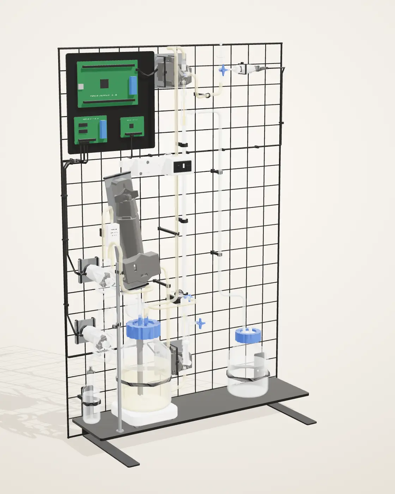
7.1.1 Specifications
- Mounting
- 600 × 900 mm wire‑grid panel on two L‑bracket feet; the bottles stand on an acrylic shelf
- Membrane
- Cobetter MiniLab hollow fiber: mPES, 0.2 µm pores, 200 cm², 11 fibers
- Volume
- A 1 L bottle: 1 L of culture in integrated prototype 2, 500 mL in prototypes 1 and 3
- Culture flow
- By a peristaltic pump: 94 mL/min in the June growth runs; a feed flow of about 300–390 mL/min in integrated prototypes 2 and 3 (their traces); 263 mL/min recommended by the membrane cycles (4.1)
- Stirring
- Magnetic stirrer at 200 rpm
- Temperature
- 37 °C for the growth curve; 22 °C for the photometer’s 434 h logged run
- Sensing
- In‑line photometer (OD600); three pressure transducers, at feed, retentate and permeate; a flowmeter; a pH probe in the bottle cap
- Control
- Four servo‑driven Luer valves and one servo pinch valve, on the return line; KOH dosing for pH
- Expression
- 3 m green LED strip: CcaS/CcaR, ~535 nm on, ~670 nm off
- Tubing
- Silicone, 4 × 6 mm and 5 × 7 mm, 50A
The partsnumbered as in the model
Culture loop 1–8
- 1Culture bottleOn its magnetic stirrer, with an air filter on the cap.
- 2Culture pumpPeristaltic; drives the loop at 263 mL/min, the recommended operating flow.
- 3Flow meterOn the culture line.
- 4In‑line photometerReads OD600 through the flowing culture.
- 5Servo valveAt the foot of the membrane column.
- 6Hollow‑fiber membraneThe cells stay in the fibers; what they secrete crosses to the shell side.
- 7Servo valveAt the top of the column, where the culture leaves the fibers.
- 8Pinch valveClamps the return line to set the pressure across the fibers.
Protectant line 9–10
- 9Protectant bottleCollects what crosses the fiber wall.
- 10Luer valveCloses the membrane’s lower shell port.
Also on the rack, named when tapped: the pressure transducer at the lumen outlet, the sampler, the KOH pump and bottle, the stirrer, the electronics plate, the shelf and the panel.
7.1.2 How the Rack Is Built
- Everything reachable. Parts hang on the wire grid, so any one can be moved or swapped without taking the rack apart.
- Bubbles out of the membrane. The membrane stands upright, so the culture enters at the foot and gas rises out at the top valve.
- Tubes you can follow. Each tube has its own path, the culture loop on the left and the protectant line on the right, so every tube can be followed by eye.
- A stable stand. The panel stands on two L‑bracket feet, and the heavy bottles sit low on the shelf.
7.1.3 The Soldered Boards
Two hand‑soldered boards run the lab bioreactor’s electronics: the controller board, with the sensor and servo ports, and a small adapter on the cable most of the sensors use, which steps the sensor’s 5 V signal down for the UNO Q’s 3.3 V input.
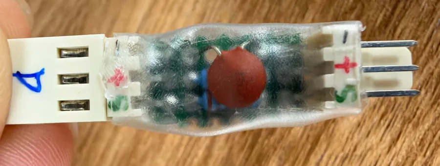
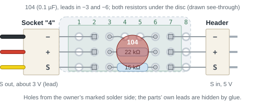
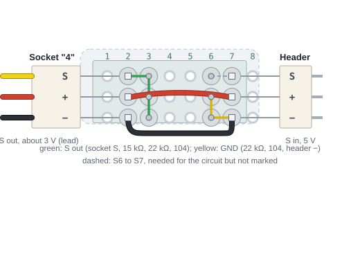
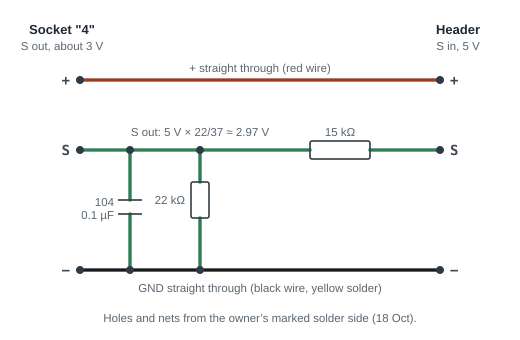
7.2 From the Lab to the Product
The lab bioreactor proved the loop. The commercial bioreactor keeps that loop and changes everything a farmer would otherwise have to touch.
- Every part in the open, within reach of the cultureA closed cabinet that only our team opens
- Medium poured and the culture inoculated by handThe team installs, primes and inoculates each unit; nothing is poured on the farm
- Growth followed on a laptop dashboardA 7‑inch screen on the front and the same screen on a phone (7.3.2)
7.3 Commercial Bioreactor: What a Farmer Buys
The commercial bioreactor is our design for the product. It puts the lab bioreactor’s loop in a cabinet about 400 × 240 × 620 mm that stands beside the crop. It has not been built yet. Day to day, the farmer only reads the screen.
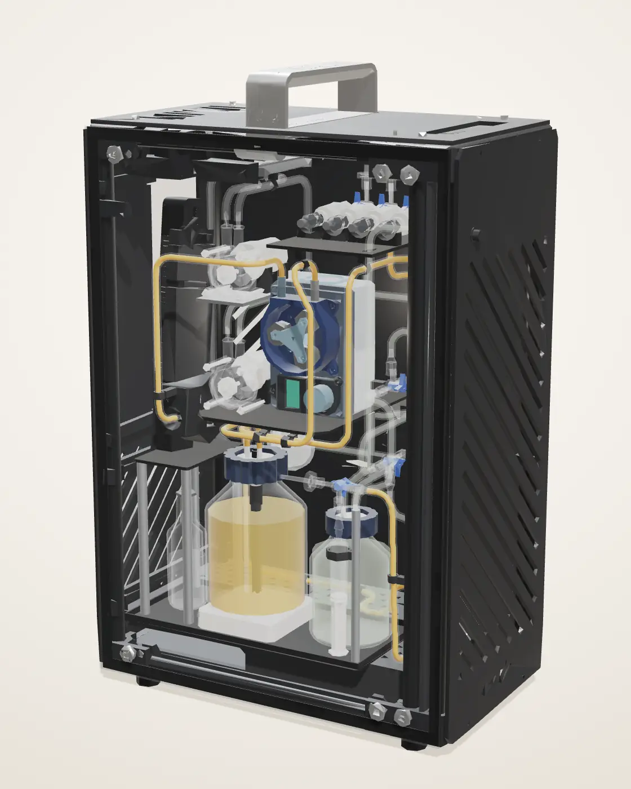
7.3.1 Specifications
- Size
- About 400 × 240 × 620 mm (W × D × H)
- Culture loop
- Stirred vessel → peristaltic pump → in‑line photometer → membrane fibers → back to the vessel
- Protectant
- Membrane shell side → protectant bottle → outlet to the field
- Volume
- 1 L, as in the lab bioreactor
- Sensing
- In‑line photometer (OD600), four pressure sensors around the membrane, pH and temperature probes
- Control
- Servo valves on the membrane’s lines; KOH dosing to hold the pH
- Interface
- A 7‑inch touchscreen on the front; the same screen as a phone page over the farm’s Wi‑Fi
- Not yet known
- Output per day, power draw and weight, to be measured once a unit is built
The partsnumbered as in the model
Inside 1–10
- 1Peristaltic pumpsMove the culture round its loop and the protectant out.
- 2In‑line photometerReads OD600 as the culture flows past.
- 3Hollow‑fiber membraneThe cells stay in the fibers; what they secrete crosses to the shell side.
- 4Culture vessel1 L, stirred, temperature held.
- 5ProbespH and temperature, in the vessel’s cap.
- 6Protectant bottleCollects what crosses the fiber wall.
- 7KOH bottleBase, to hold the culture’s pH.
- 8Servo valvesOpen and close the culture’s way through the membrane.
- 9Pressure sensorsFour, one at each membrane port.
- 10OutletWhere the protectant leaves for the field.
The case comes off on the slider: the smoked‑glass door, the top panel with its handle, the side and end panels and the frame.
7.3.2 Screen and Phone
The screen answers one question at a glance: does anything need doing? It shows the run state, the culture’s density, acidity and temperature, the light and the pumps, and one banner that says either that all is normal or what to do. You can try the same interface in our digital twin. Digital Twin →
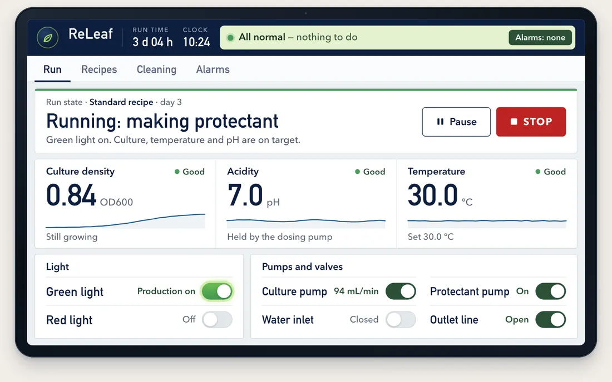
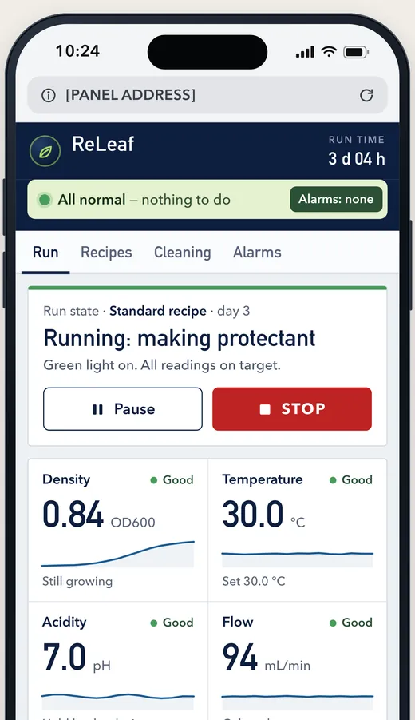
- 1Run stateWhat the unit is doing, and the day of the run
- 2Culture densityOD600 from the in‑line photometer, with its trend
- 3Status bannerAll normal, or what to do
Containment & Safety
Keeping genetically modified organisms out of the environment is the first priority of the ReLEAF bioreactor.
What gets through the membrane wall
ModelTo check that the membrane holds the bacteria in, we took medium from the lumen and shell sides of the running bioreactor, plated both, and compared them after 24 h at 37 °C.
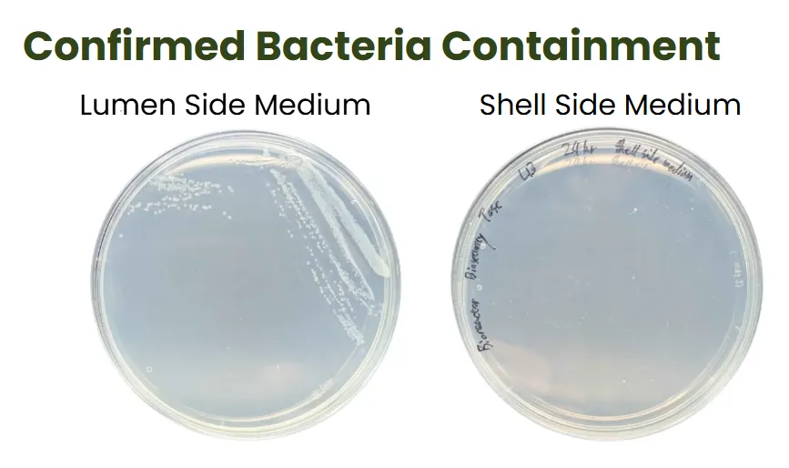
Colonies grew from the lumen side and none from the shell side, so in this test the membrane worked as a physical barrier and kept B. subtilis out of the medium that leaves the machine. A second plating, of shell‑side medium from an earlier growth run, also grew no colonies (photometer page, 2.1).
A leak outside the membrane. In integrated prototype 3 a Luer valve at the start of the lumen loop broke in half at the 38‑hour mark, and culture medium leaked into the incubator (4.2, prototype 3). The membrane did not fail. We traced the break to the clean‑in‑place step, whose 35% hydrogen peroxide reaches the valves before it is diluted in the reservoir (its Learn). The planned droplet sensor under the loop is meant to catch leaks like this (9.2.3).
Handling the peroxide. 35% hydrogen peroxide is a strong oxidizer that harms skin and eyes. As standard lab practice, it is handled with gloves and eye protection, in a well‑ventilated space.
Successes & Future Plans
9.1 Demonstrated Success
-
Bacterial Containment
Shell‑side medium grew no colonies in either plating; the lumen‑side plate grew.
Plates, part 8 -
Protectant Transfer
ACC deaminase by ELISA: 10.5 µg/mL on the shell side, 10.7 in the lumen.
Result 5.1 -
Bacterial Growth
OD600 0.14 to 2.71 in 37 h in integrated run 3, at 0.286 h−1, inside the range forecast before the run.
Prototype 3, 4.2 -
Closed‑Loop Operation
OD600, flow and pressure logged in line through a 116 h run, without opening the vessel.
Dashboard, 4.2
9.2 Future Plan
9.2.1 Containment in Layers
Under normal operation the bacteria are already contained. The membrane’s 0.2 µm pores are smaller than any B. subtilis cell, and shell‑side medium grew no colonies in two platings (8). Containment is the core promise of our project, so for the commercial bioreactor we plan two more layers of protection around the membrane, each catching a failure the other cannot see. The first uses hardware the bioreactor already has; the second adds one sensor.
Pressure comes first because it needs no new parts and acts before anything escapes. The droplet sensor catches fluid where it should never be, which pressure cannot.
9.2.2 Layer 1: Pressure Alarm and Pump Stop
The lab bioreactor already reads pressure at three membrane ports (feed, retentate and permeate) and shows the transmembrane pressure (TMP) on the dashboard (4.2); the commercial design reads all four (In‑Lumen, Out‑Lumen, In‑Shell, Out‑Shell). Today these numbers are only displayed. We will program the controller to act on them: when the lumen pressure or the TMP passes a set threshold, it sounds an alarm, stops the culture pump and opens the pinch valve.
Too much pressure is the condition most likely to force cells through a damaged fiber or burst a fitting, so this layer acts before a breach happens. A sudden drop can mean the membrane has already given way, often before any liquid shows, so the run stops and a shell‑side sample is plated to check (8).

Four pressure ports, two alarms
Model PlannedThis card runs a small model of the module’s four pressure ports and the two planned alarms in the browser. On the 4 September dashboard, feed, retentate and permeate each read about 0.20 bar.
The plan
- Sensors
- Four pressure transducers, one at each membrane port (the lab rig has three today)
- Trigger
- Lumen pressure or TMP above a threshold for several readings in a row, or a sudden drop
- Action
- An alarm on the screen and the phone page; the culture pump stops; the pinch valve opens to relieve the pressure
- Reset
- By hand, once the cause is found; no automatic restart
- New hardware
- None, a firmware change only
9.2.3 Layer 2: Droplet Sensor under the Loop
The first layer watches fluid where it should be; the second watches where it should not. A droplet sensor under the setup will detect liquid escaping from the tubing or connections, then sound an alarm and stop the pumps, so a slow leak from a loose fitting cannot run on unnoticed.
The plan
- Sensor
- A droplet (moisture) sensor at the low point of a drip tray under the loop
- Trigger
- Any moisture on the sensor
- Action
- An alarm; the pumps stop
- New hardware
- One sensor and a drip tray
9.2.4 How the Layers Work Together
Each layer answers a different failure, and both end the same way. The alarm sounds, the pumps stop, and nothing restarts until a person has found the cause.
9.2.5 Sealed Refill Cartridges
Over a season a farmer has to top up both the medium and the culture, and neither is safe to do by hand. So the commercial bioreactor takes two sealed, single‑use cartridges: ready‑to‑use sterile medium, and a B. subtilis spore stock that ships at room temperature. Both drop into one keyed dock: the medium cartridge has a D‑shaped collar and the spore cartridge a round one, so neither fits the other’s port.
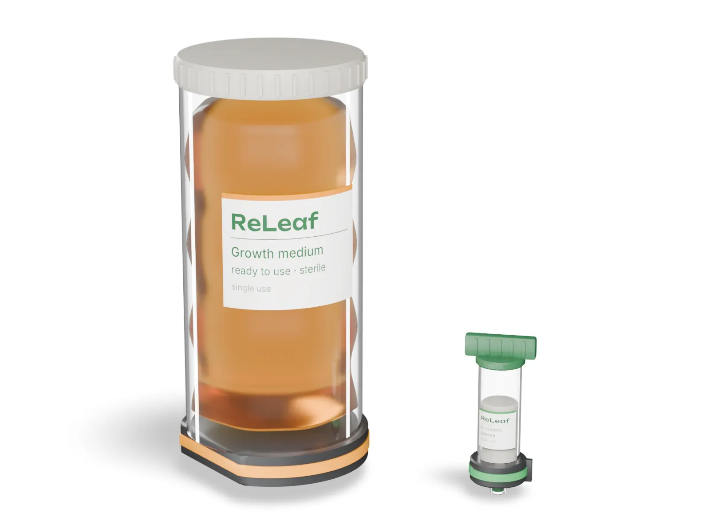
A valve in each cartridge’s base stays shut until the cartridge is seated and closes as it lifts out, and the medium bag collapses as it drains, so no vent is needed. Medium goes in first, then the spores. The cartridges are the only part a farmer handles; spent ones come back to us sealed.
The next steps toward a prototype are a reliable seal (the printed parts were not watertight, so it needs moulded parts or O‑ring glands), sterility over repeated changeovers, and confirmation that the strain sporulates and germinates reliably from stored spores.
9.2.6 Water Supply and Irrigation Line
The commercial bioreactor will connect to the farm’s water supply. The protectant stream from the shell side is mixed with that water and pumped into the irrigation line, so it reaches the roots with the irrigation water and the farmer adds nothing by hand.
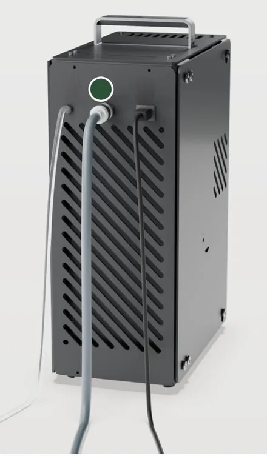
Water9.2.7 Scaling
We would grow capacity by scaling out, adding copies of the module already characterised, the way a vertical farm adds identical units. From one module to eight the membrane never limits; the pumps, power and medium supply around it do, and a duty‑cycled pump would ease that.
Team wiki · Biomanufacturing · 8 Scaling One module to eight: what binds? Read the full scaling analysisReproduction
10.1 Materials List & Cost
| Part | Qty | Unit (US$) | Total (US$) |
|---|---|---|---|
| Luer valvesThree‑way stopcock, Fr6‑10 | 10 | 0.50 | 5.00 |
| TubingSilicone, 4 × 6 mm and 5 × 7 mm, 50A | 1 | 10.00 | 10.00 |
| FiltersHydrophobic PTFE disc vent filter, 0.45 µm | 5 | 10.00 | 50.00 |
| Pressure transducersBP8G‑AGB (Jingfeng), ceramic: 0–1 MPa gauge, 0–5 V out | 4 | 12.00 | 48.00 |
| pH sensorDFRobot Gravity analog pH V2, board and glass probe | 1 | 77.30 | 77.30 |
| Flow meterZJ‑TM02 | 1 | 2.00 | 2.00 |
| Reservoirs, 1 LSCHOTT bottle | 2 | 10.00 | 20.00 |
| Reservoir, ~100 mLSCHOTT bottle | 1 | 5.00 | 5.00 |
| Hollow‑fiber membraneCobetter Biophsep MiniLab: mPES, 0.2 µm, 200 cm², 11 fibers | 1 | 245.00 | 245.00 |
| Magnetic stirrerUSB, variable speed | 1 | 10.00 | 10.00 |
| Culture pumpBP1000‑DNUN64B peristaltic, 1 L/min | 1 | 50.00 | 50.00 |
| Liquid pumpH0009, 1.5 L/min | 1 | 8.00 | 8.00 |
| Servo motorsSTS3215, 12 V: the pinch valve and the automated luer valves | 5 | 20.00 | 100.00 |
| Servo bus adapterBus serial servo adapter | 1 | 10.00 | 10.00 |
| M4 nutFor the pinch valve | 2 | — | — |
| M4 button‑head screwFor the pinch valve | 2 | — | — |
| SolderLead‑free; one roll serves all our hardware | 1 | 10.00 | 10.00 |
| In‑line photometer (Pro)The total of the photometer’s materials list | 1 | 371.78 | 371.78 |
| Filament25.81 g black PLA, for the printed pinch‑valve and luer‑valve parts (Bambu Studio) | 22.99/kg | 0.59 | |
| Total, known costs | 1,022.67 |
Prices from the team’s materials lists, in US dollars; known costs total US$1,022.67. Not costed yet: the pinch valve’s M4 nuts and screws. Not listed: the controller (Arduino UNO Q) and its mainboard with the DC–DC converter, the KOH dosing pump, and the stir bar. The list counts four pressure transducers; the lab rig runs three (feed, retentate and permeate).
10.2 Design Files
The two printed parts are the boxes that hold the five servos. Each STL downloads under a descriptive name.
The two STLsone per printed part
- 1Pinch‑valve body
Holds the pinch valve’s servo, with an arm of four nut pockets; it clamps the return line.
- 2Luer‑valve servo mount, four of one part
The same servo box with a screw ear on each side; one turns each automated Luer valve.
10.3 Assembly Guide, Brochure & User Manual
Seven stages, from the photometer, the four port assemblies and the sensor adapter cable to the water run, sterilizing and blanking, with the parts list and a check after each. 10 pages.
The commercial bioreactor as a farmer would meet it: what it does, setting up, the screen, refills, running costs and specifications, for a design not yet built. 17 pages.
Installation, calibration, daily operation, maintenance, troubleshooting and disposal for the lab bioreactor, with the safety rules and a commissioning record. 16 pages.